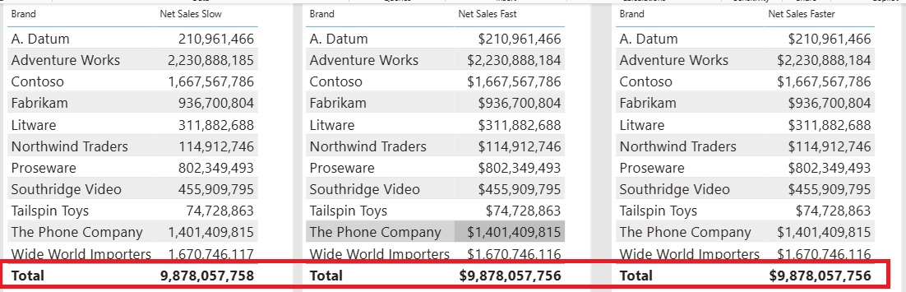
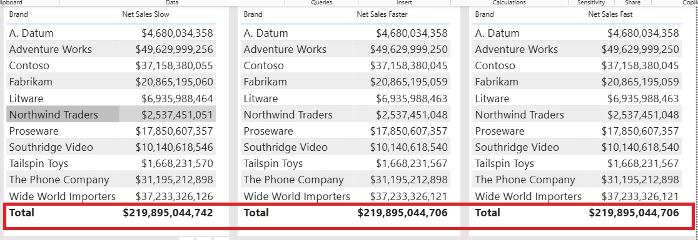
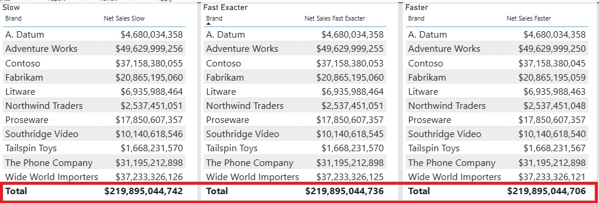
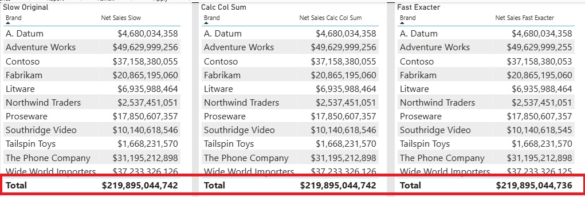

Contoso · Page 2 of 3
Accuracy: do the numbers match?
A faster measure is only an improvement if it returns the same numbers. Each table shows Net Sales by brand for the original measure and the rewrites.
| Measure | 10M total | 100M total | Diff. to Slow (100M) |
|---|---|---|---|
| Net Sales Slow (original) | $9,878,057,758 | $219,895,044,742 | – |
| Net Sales Fast | $9,878,057,756 | $219,895,044,706 | −$36 |
| Net Sales Faster | $9,878,057,756 | $219,895,044,706 | −$36 |
| Net Sales Fast Exacter | – | $219,895,044,736 | −$6 |
| Net Sales Sum (calculated column) | – | $219,895,044,742 | $0 |
10M dataset Results10M

Fast and Faster return identical values at every level. Compared with the original, the total is $2 lower ($9,878,057,756 vs. $9,878,057,758). At brand level, only Adventure Works and Wide World Importers differ, by $1 each. That's too small for any analysis to notice, but it doesn't reconcile.
100M dataset Results100MOrig

With 22x more rows, the gap grows to $36 ($219,895,044,742 vs. $219,895,044,706). The original is higher for 8 of 11 brands, by $1 to $10, and never lower. A consistent direction points to rounding that builds up row by row, not random noise. Fast and Faster still match each other exactly.
A closer rewrite: Net Sales Fast Exacter Results100MExacter

Fast Exacter applies the 0.9 factor per row, like the original, but inside a filter instead of an IF. The total is $219,895,044,736, only $6 from the original instead of $36. It matches the original exactly for 7 of 11 brands and is within $2 on the rest. The remaining gap comes from the two engines doing the same arithmetic slightly differently.
Show measure
Net Sales Fast Exacter =
VAR Discounted =
CALCULATE ( SUMX ( Sales, Sales[Quantity] * Sales[Net Price] * 0.9 ),
KEEPFILTERS ( Sales[Quantity] > 5 ) )
VAR RegularAmt =
CALCULATE ( SUMX ( Sales, Sales[Quantity] * Sales[Net Price] ),
KEEPFILTERS ( Sales[Quantity] <= 5 ) )
RETURN Discounted + RegularAmt
Pre-calculated per row: Net Sales Sum Results100MCalcColMiddle

The original row logic moves into a calculated column (Sales[New Net]), and the measure is a plain SUM. The result is identical to the original: $219,895,044,742 in total and the same value for all 11 brands. Each row's net amount is calculated once, the same way the original measure calculates it, and stored. Adding up stored values introduces no new rounding.
The column version is also the fastest one tested: 80 ms for the grand total compared with 2,123 ms for the original (see page 3). For this case, it's the only approach that is both fast and matches the original to the dollar.
Show column and measure
// Calculated column on Sales: the original row logic, computed at refresh
New Net =
IF ( Sales[Quantity] > 5,
Sales[Quantity] * Sales[Net Price] * 0.9,
Sales[Quantity] * Sales[Net Price] )
// Measure
Net Sales Sum = SUM ( Sales[New Net] )
Summary
- Where the discount is applied changes the cents. The original discounts each row and then adds them up. Fast and Faster add up first and apply the discount once. That's the same in exact math, but not in computer arithmetic.
Net Priceis a Fixed Decimal column, which stores 4 decimal places even when 2 are displayed. - The difference is tiny but real: $36 on $219.9B, about 0.00000002%. It's irrelevant for trend analysis, but finance would ask why the report doesn't tie out to the ledger. Applying the discount per row in a faster measure (Fast Exact) narrows the gap to $6, but doesn't close it.
- Pre-calculating each row closes the gap. A calculated column with the original row logic, summed with
SUM, matches the original at every level and is also the fastest version. The trade-offs are a larger model, longer refresh, and a discount rule that is fixed at refresh. - Matching the original isn't the same as being correct. The original is just the number that existed first. The right check is an exact reconciliation against the source, such as a SQL query using DECIMAL arithmetic.
- Production recommendation: agree the rounding rule with finance (for example, discount per line rounded to the cent) and calculate
Net Amountper line upstream in Power Query, Snowflake or Fabric. It works like the calculated column, but usually compresses better, keeps the logic in one governed place, and the measure stays a plainSUM: fast, consistent and auditable. - The actual solution may depend on the needs/environment of a specific situation. One size/answer does not fit all (situations)